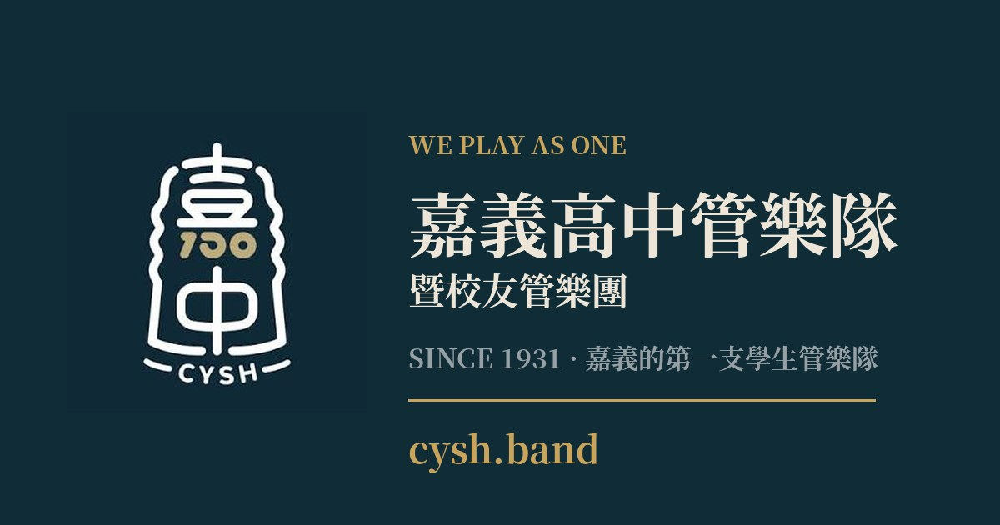

嘉義在地音樂力量大爆發與榮耀時刻
喜愛音樂的管樂社朋友們大家看過來！來自我們嘉義市的在地優秀團體嘉頌重奏團傳來極大的好消息！在令人矚目的第37屆傳藝金曲獎當中，嘉頌重奏團發行的音樂專輯樂脈表現極為亮眼，一舉斬獲了三項重量級大獎！這份來自在地音樂人的耀眼成績，不僅展現了嘉義深厚的音樂底蘊，更讓身為音樂愛好者的我們感到無比振奮與驕傲。看著嘉義在地團體在全國級的傳統與藝術音樂殿堂上綻放光芒，實在是讓人太興奮了！
專輯樂脈榮獲三項大獎肯定
這次嘉頌重奏團發行的音樂專輯樂脈能在競爭激烈的第37屆傳藝金曲獎脫穎而出，實力真的非常堅強。專輯獲得的三項大獎分別是最佳作曲獎、最佳專輯製作人獎以及最佳錄音獎。每一個獎項都代表著專業評審對於這張專輯在音樂創作、製作與聲音品質上的高度認同。從曲目的創作到整張專輯的誕生，每一個環節都展現出極致的專業與心血，能獲得這三項大獎絕對是實至名歸。
傑出幕後推手與得獎曲目亮點
在這次獲獎的詳細名單中，最佳作曲獎由楊元碩創作的曲目嗩笛狂想勇奪肯定，這首作品展現了極具特色的音樂魅力；最佳專輯製作人獎則由鄭家麟獲得，展現出無可替代的製作實力與音樂視野；最佳錄音獎則是由村上優摘下，細緻刻畫出聲音的極致質感。這三位優秀的音樂人各自在作曲、製作與錄音領域發揮卓越才能，共同打造出樂脈這張經典作品，為嘉義市的藝文界寫下了極為光彩的一頁。
邀請大家持續關注在地音樂動態
身為嘉義高中管樂社的一份子，看到嘉義在地音樂團體嘉頌重奏團在傳藝金曲獎締造如此佳績，真的深受鼓舞與啟發。音樂的傳承與創新需要大家共同的支持與關注。歡迎所有喜愛管樂與藝術音樂的朋友們，一起關注嘉頌重奏團與樂脈專輯的相關訊息，也歡迎把這個令人振奮的好消息分享給更多身邊的好朋友，讓我們一起為嘉義在地優秀的音樂團隊加油打氣，共同感受音樂帶來的震撼與美好！